Sapori genuini, ogni giorno in tavola
Una selezione di piatti preparati con ingredienti freschi e di stagione. Il menù può variare in base alla disponibilità del mercato.
Antipasti
Tagliere Appetito
€16Selezione di salumi e formaggi locali, miele di castagno e composta di fichi.
Bruschette della Casa
€9Pomodorino datterino, burrata pugliese e basilico su pane casereccio tostato.
Polpo alla Griglia
€14Polpo cotto a bassa temperatura, crema di patate viola e paprika affumicata.
Carpaccio di Manzo
€13Scaglie di Parmigiano 24 mesi, rucola selvatica e riduzione all'aceto balsamico.
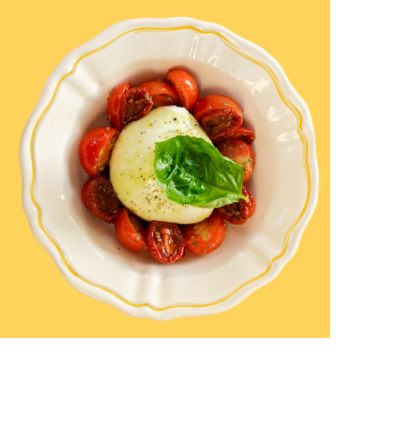
Burrata e Pomodorini Confit
€12Burrata pugliese cremosa, pomodorini confit al forno e basilico fresco.
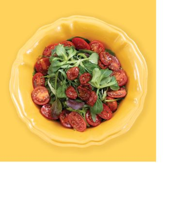
Insalata di Pomodori e Misticanza
€8Pomodori di stagione, insalatina mista e un filo d'olio EVO a crudo.
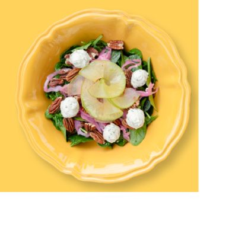
Spinaci, Mela e Caprino
€11Spinaci freschi, mela in lamelle, formaggio di capra, noci pecan e cipolla rossa in agrodolce.
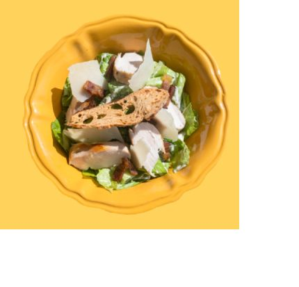
Insalata Caesar con Pollo
€13Lattuga romana, petto di pollo grigliato, crostini di pane, pancetta croccante e scaglie di Parmigiano.
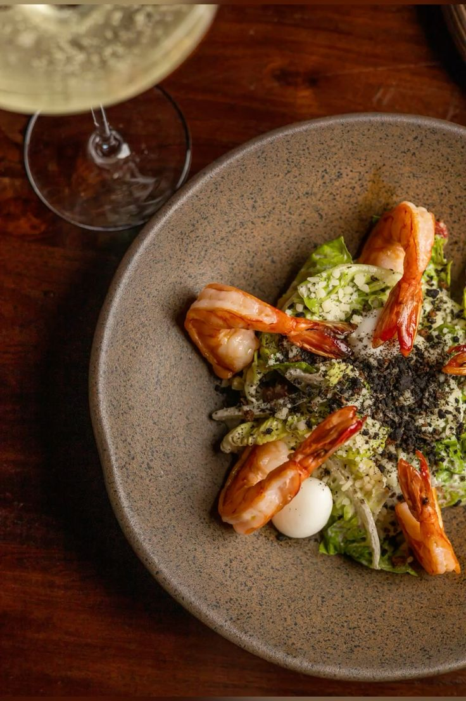
Gamberi Scottati
€15Gamberi scottati in padella, insalatina croccante e granella di pane nero.
Primi Piatti
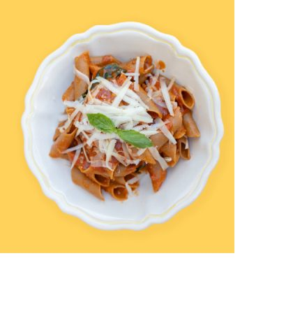
Pacchero alla Norma
€13Melanzana viola marinata, pomodoro San Marzano, ricotta salata e basilico fresco: un omaggio alla tradizione siciliana.
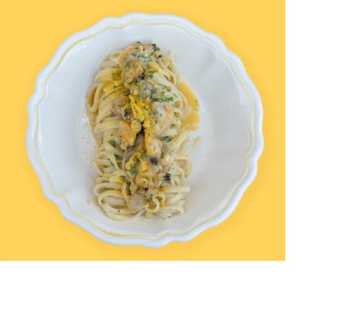
Linguine allo Scoglio
€17Cozze, vongole veraci e gamberi freschi, un filo d'olio EVO e prezzemolo: la ricetta di famiglia che apriva ogni domenica.
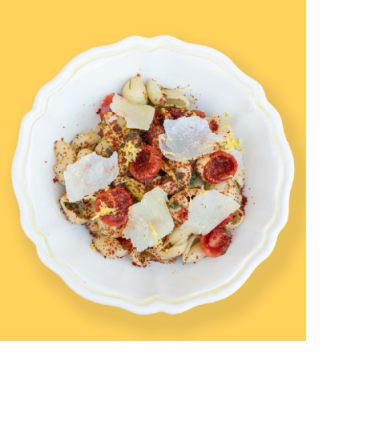
Conchigliette al Pecorino
€12Pecorino di grotta, pomodorini confit e olive taggiasche: nata per i pranzi d'estate, oggi disponibile tutto l'anno.
Risotto allo Zafferano
€14Riso Carnaroli, zafferano in pistilli e Parmigiano 24 mesi: la ricetta milanese imparata dal nostro chef.
Tagliatelle al Ragù
€13Pasta fresca all'uovo tirata a mano e ragù di manzo cotto lentamente per oltre 6 ore.
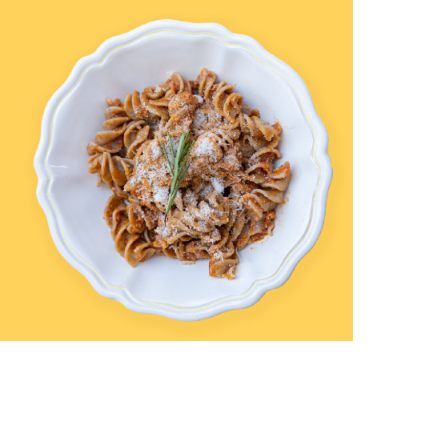
Fusilli Integrali al Pomodoro
€12Pasta integrale, salsa di pomodoro fresco, rosmarino e Parmigiano grattugiato.
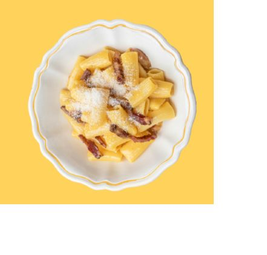
Rigatoni al Guanciale
€14Guanciale croccante, pecorino romano e una macinata di pepe nero.
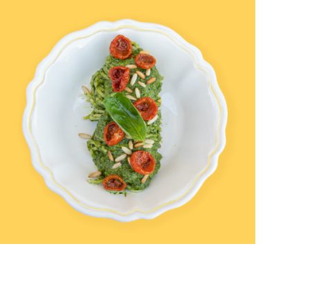
Trofie al Pesto
€13Pesto genovese fatto in casa, pomodorini confit e pinoli tostati.
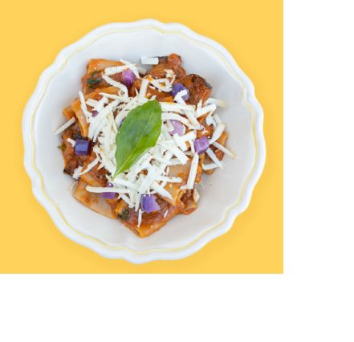
Ravioli al Pomodoro
€15Pasta ripiena fatta in casa, salsa di pomodoro, cipolla rossa e basilico fresco.
Secondi Piatti
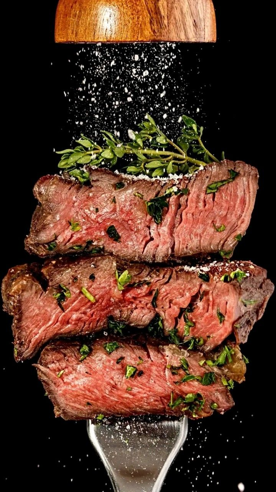
Tagliata al Rosmarino
€22Scottona italiana, rosmarino fresco e riduzione al vino rosso: semplice, per lasciare parlare la materia prima.
Branzino al Forno
€19Branzino intero, patate al rosmarino e pomodorini al forno con olive taggiasche.
Pollo alla Cacciatora
€15Pollo ruspante cotto con olive, capperi e pomodoro: la ricetta contadina di sempre.
Parmigiana di Melanzane
€12Melanzane fritte, pomodoro, mozzarella e basilico, gratinate al forno.
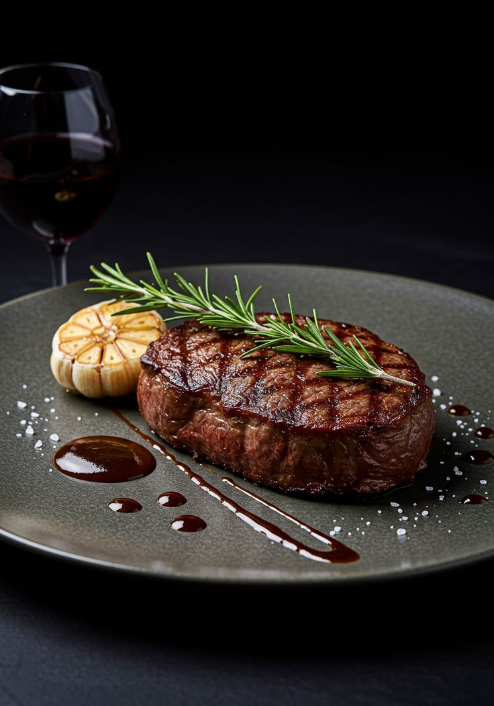
Filetto al Vino Rosso
€26Filetto di manzo scottato, aglio in camicia, rosmarino e riduzione al vino rosso.
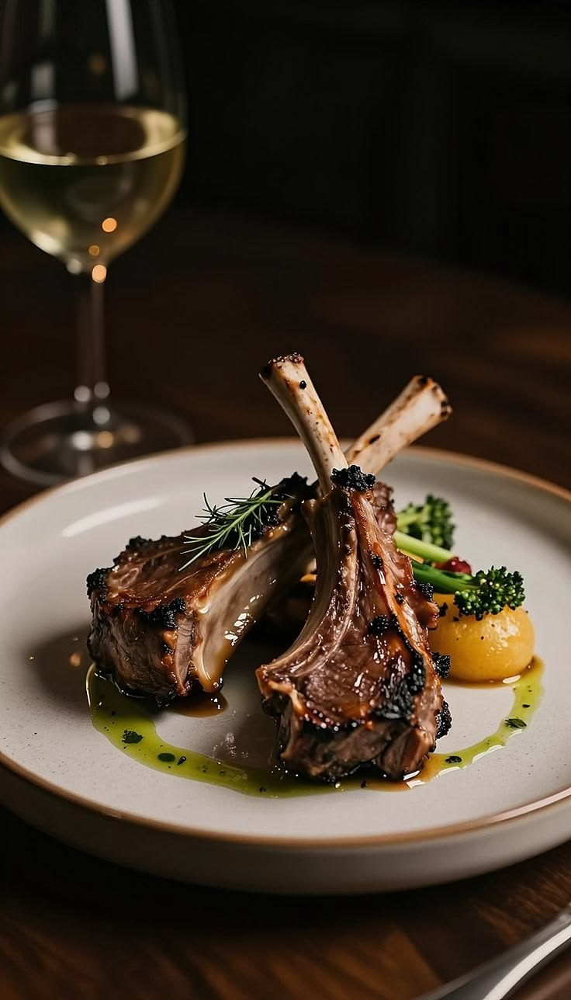
Costolette di Agnello alle Erbe
€24Costolette d'agnello rosolate, erbe fresche e contorno di verdure di stagione.
Dolci
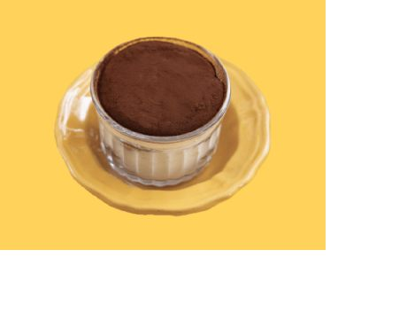
Tiramisù della Casa
€7Mascarpone, savoiardi inzuppati al caffè e cacao amaro: la ricetta della nonna, servita come allora.
Panna Cotta ai Frutti di Bosco
€6Panna cotta artigianale con coulis di frutti di bosco freschi di stagione.
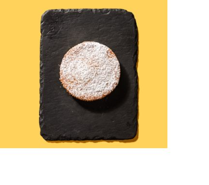
Tortina alla Vaniglia
€6Tortina soffice fatta in casa, spolverata di zucchero a velo.
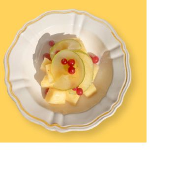
Macedonia di Frutta Fresca
€5Frutta di stagione tagliata fresca con ribes rossi e succo d'agrumi.
Bevande
Calice di Vino della Casa
€5Rosso, bianco o rosé: selezione di cantine locali, disponibile anche a bottiglia.
Acqua Naturale / Frizzante
€2.50Bottiglia da 0,75L.
I prezzi sono indicativi e possono variare in base alla stagionalità degli ingredienti. Per allergie e intolleranze chiedi pure al nostro staff.